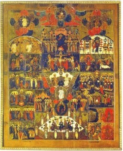
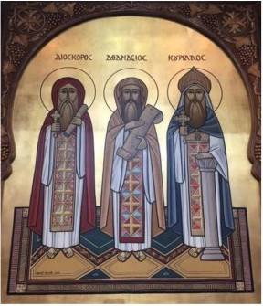

0276 Manichaeism - Manichaeism teaches an elaborate dualistic cosmology describing the struggle between a good, spiritual world of light; and an evil, material world of darkness. Through an ongoing process that takes place in human history, light is gradually removed from the world of matter and returned to the world of light, whence it came. Its beliefs are rooted in Zoroastrian dualism preserved in gnostic religious movements. Manichaeism spreads with extraordinary speed both east and west. It reaches Rome through the apostle Psattiq by 280 CE, via Egypt, where it flourishes in the
Fayum area c. 290. Manichaean monasteries exist in Rome in 312 during the time of Pope Miltiades. In 296, Diocletian decrees against the Manichaeans: "We order that their organizers and leaders be subject to the final penalties and condemned to the fire with their abominable scriptures." This results in martyrdom for many in Egypt and North Africa. In 354, Hilary of Poitiers writes that the Manichaean faith is a significant force in southern Gaul. In 381, Christians request that Theodosius I strip Manichaeans of their civil rights. He issues a decree of death for Manichaean monks in 382.

0300 Arianism - “Jesus was begotten by and is subordinate to the Father,” a belief held today by Jehovah’s Witnesses.
0325 The First Council of Nicaea is summoned to resolve a disagreements arising from within the Church of Alexandria over Arianism: whether the Son was 'begotten' by the Father from his own being, and therefore had no beginning, or else was created out of nothing, and therefore had a beginning. This hyper-intellectualization of Christianity allows total control over the message, and of course the loser of the debate, Arius, is banished.
0350 Donatism - Elements of the Church attack apostate clergy who had collaborated with the Roman persecutors as unworthy to administer sacraments. Augustine of Hippo campaigns against Donatism as bishop, and through his efforts, orthodoxy gains the upper hand. According to Augustine, sacramental validity is a property of the priesthood independent of the individual character of the priest. Influenced by the Old Testament, he believes in discipline as a means of education. In his letter to Vincentius, Augustine uses the New Testament Parable of the Great Banquet to justify using force against the Donatists: "You are of the opinion that no one should be compelled to follow righteousness; and yet you read that the householder said to his servants, 'Whomsoever ye shall find, compel them to come in.'" The Church thereafter conveniently uses Augustine's texts to justify the use of force in the persecution of pagan religions, of heretics by the Inquisition, and of Native American religions.
The early reformers John Wycliffe (d. 1384), who teaches that the moral corruption of priests invalidates their offices and sacraments, and Jan Hus (d. 1415), who argues that a prelate's moral character determines his ecclesiastical authority, are accused of Donatism and condemned as heretics at the Council of Constance (1414-8).
0367 Athenasius, bishop of Alexandria, determines the canonical Scriptures of New Testament; the Gnostic Nag Hamadi text of the Gospel of Thomas is hidden by Gnostics shortly thereafter.

St. Dioscorus (left), Pope of Alexandria